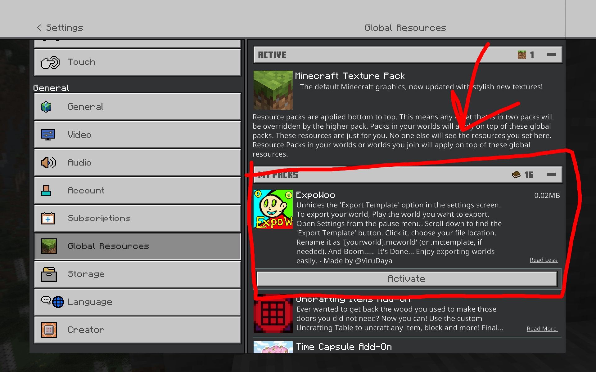

Planet Minecraft
Planet Minecraft
 MediaFire
MediaFire
Platforms : Minecraft Pocket/Bedrock Edition
Versions : 1.21+
This resource pack re-enables the hidden “Export Template” button within the Minecraft Bedrock Edition (PE) game settings. In newer versions of Minecraft (starting around 1.20+), Mojang removed or hid several developer and advanced tools from the user interface—one of them being the ability to export your world as a .mcworld or .mctemplate file directly from the game. This pack brings that option back for creators, map developers, and anyone who wants to back up or share their world effortlessly.
This mod doesn’t add any custom blocks, scripts, or gameplay changes. It simply unhides built-in UI elements that are disabled by default on Pocket Edition and certain Bedrock platforms. It’s a lightweight and safe resource pack with no performance impact.
The exported files can be shared with others or re-imported later, making it great for content creators, multiplayer backups, map editors, and more. No root, scripts, or external tools are required.
Note: Works only in local single-player worlds. Make sure your device supports file save dialogs (e.g. Android 11+, Windows 10/11).
Simple, fast, and functional — this is the easiest way to export your Minecraft PE worlds again.
Import the mcpack and Open Minecraft → Settings.
Scroll down to Global Resources and Activate ExpoWoo Mcpack.
After Activation, Open the world, which you want to Export.

Go To Pause screen or Menu bar.
Open Settings. And Scroll to Bottom.
You'll see a new button, 'Export Template' .
Click on it.
You'll be redirected to a new dialogue box asking the location to save the world file.
Rename file extension from .mctemplate to .mcworld
Check your Location for saved file.